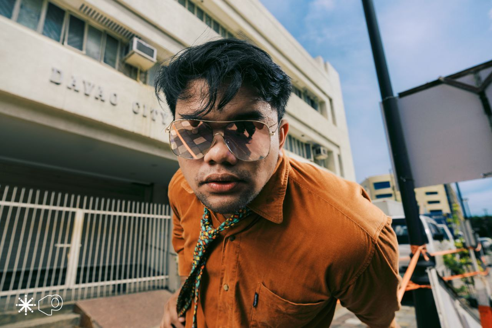
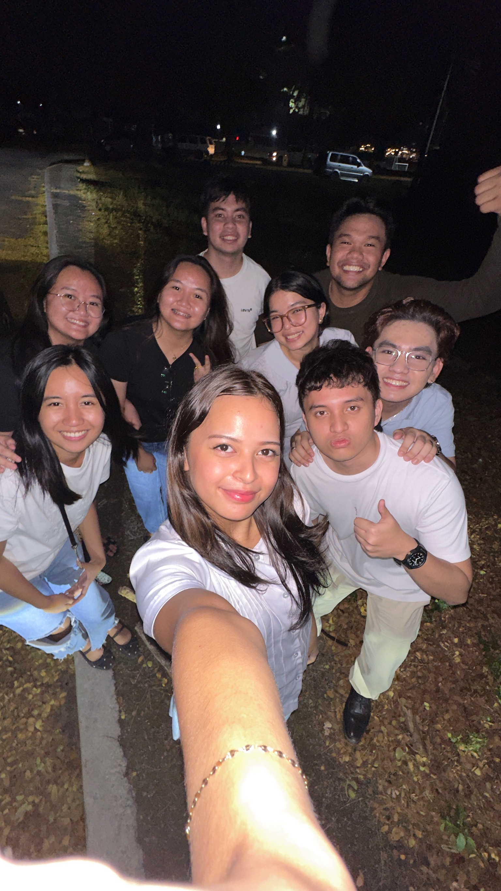
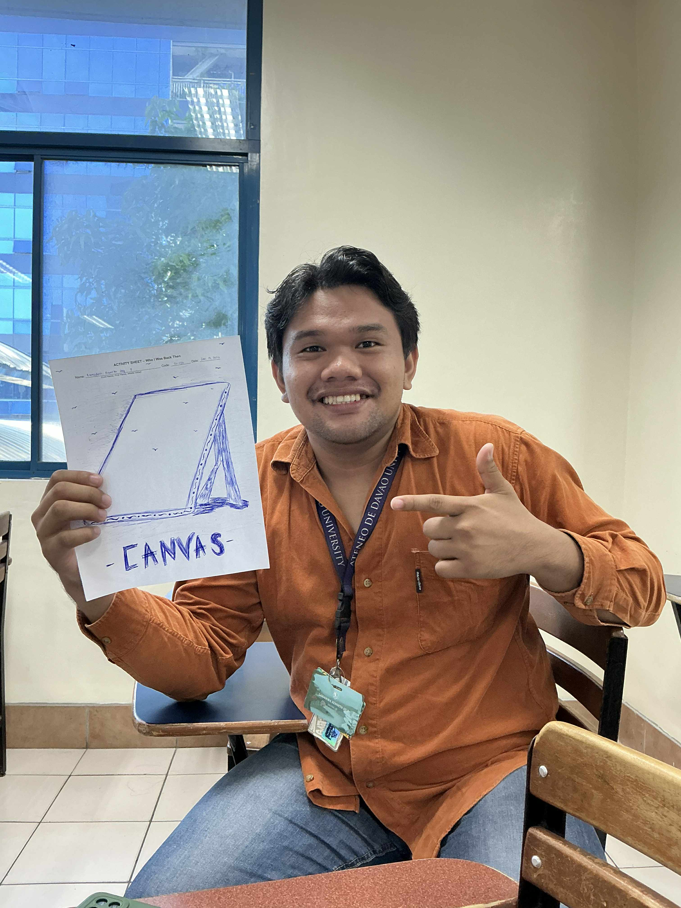
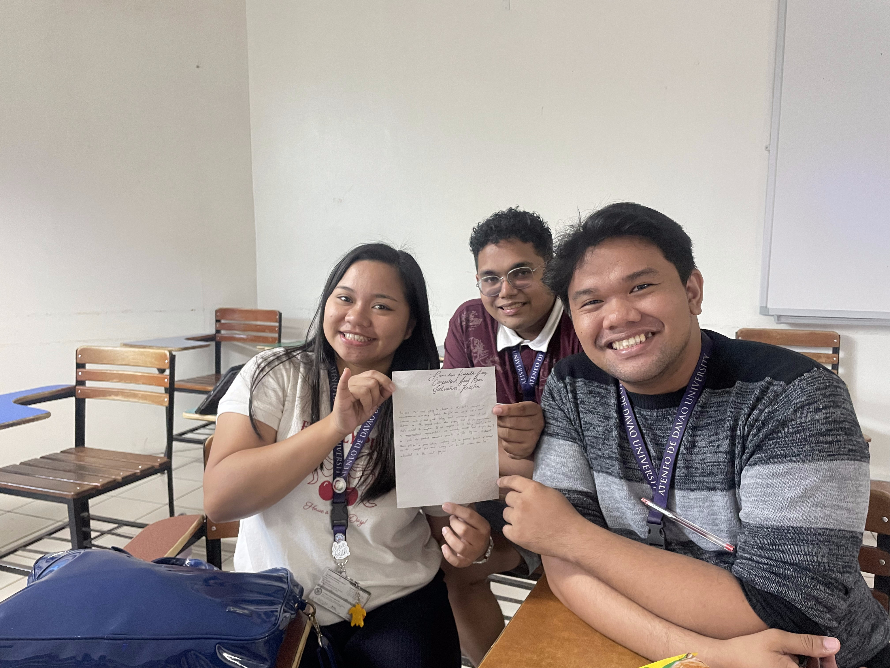

I was born and raised in Davao City in a family of five. One of the earliest moments that quietly shaped me happened even before I could fully understand it. My parents were once part of the religious group Kingdom of Jesus Christ (KOJC) led by Mr. Apollo Quiboloy, but after experiencing it firsthand, they chose to return to the Roman Catholic Church because their principles no longer aligned with what they believed in.
Growing up, this story was more than just family history — it became my first lesson in discernment. Like St. Ignatius of Loyola, who learned to listen to the movements of his heart, I began to understand that faith is not blind obedience but a conscious choice. I learned early on that when something no longer aligns with your values, you are called to pause, reflect, and courageously choose what leads to truth — not only for yourself, but for the people you love.

From then on, I was raised with Catholic values that emphasized love, service, and relationships. My family became my first experience of what Ignatius would call consolation — a sense of peace and grounding that reminds me of what truly matters. This foundation shaped how I relate to others and why I value relationships so deeply.
During my grade school and high school years, I found myself constantly placed in leadership roles. I was outgoing and active, and somehow, people trusted me enough to elect me as president multiple times. At first, I thought leadership was about recognition. But as I encountered people from different backgrounds, I began to wrestle with deeper questions: Am I leading for myself, or for others? Am I truly listening, or just speaking?
These moments became my inner struggle. There were times I felt overwhelmed, times I doubted if I was capable, and times I questioned my intentions. Yet, in serving others, I experienced a different kind of fulfillment — one that Ignatius would describe as true consolation. I learned that leadership is not about being seen, but about making others seen.

This realization deepened when I immersed myself in communities across Mindanao. I encountered people whose stories were often unheard — those who felt forgotten. These experiences broke something in me, but also built something new. They stripped away my comfort and revealed a truth: my dreams were no longer mine alone. I began carrying their stories with me, and with that came a responsibility to become a voice for those who are unheard.
In college, my journey took another turn. I immersed myself in the arts — performing indigenous dances, folk dances, hip-hop, theater, and even singing. Through these, I discovered a deeper appreciation for culture and identity. The arts became more than performance; they became a way of honoring stories, preserving heritage, and connecting with people.
At the same time, I continued to serve in leadership — as NSM Cluster Representative and later as President of the Alliance of Davao Biology. These roles were not without challenges. I faced criticisms and allegations that tested my character. During those moments, I struggled internally: Do I defend myself, or remain silent? Do I fight back, or stay grounded? What sustained me was the people who stood by me — my friends and co-officers. Their trust and support reminded me that leadership is never done alone. This experience humbled me. It taught me that while recognition may fade and criticism may arise, integrity and relationships endure.


The Cannonball Moment
However, the most profound moment of conversion came in late 2022. My father passed away, and at the same time, my mother underwent a major operation. Everything in my life seemed to collapse at once — academic pressure, responsibilities, and grief. I reached my breaking point.
This was my “cannonball moment,” much like that of St. Ignatius — a moment that shattered my plans and forced me to confront what truly mattered. In that space of desolation, I asked myself: Who am I beyond my achievements? What truly defines me?
In the end, I made a decision that changed me — I chose my family over my academics. I stepped back from school, knowing I would be left behind by my batchmates. It was not an easy decision, but it was the most honest and loving one I have ever made. In that choice, I found clarity. I realized that success is not measured by how fast you move, but by how faithful you are to what truly matters.
Now, as I stand as a graduating student, I see things differently. I am no longer driven solely by ambition, but by purpose. I have become more grounded, more discerning, and more aligned with the person I am called to be.
I carry with me the love of my father in heaven, the strength of my mother, the support of my sisters, and the presence of everyone who has journeyed with me. More importantly, I carry a deeper awareness of God moving through every moment — both in consolation and desolation.
As I look toward my future, especially in my chosen field, I hope to become not just a professional, but a person for others — someone who listens, serves, and acts with compassion. I may not know exactly what lies ahead, but I now move forward with a different kind of confidence — not one rooted in certainty, but in faith. A faith that whatever comes, I will face it with humility, courage, and love.
— K.J.L.